Artwork Gallery
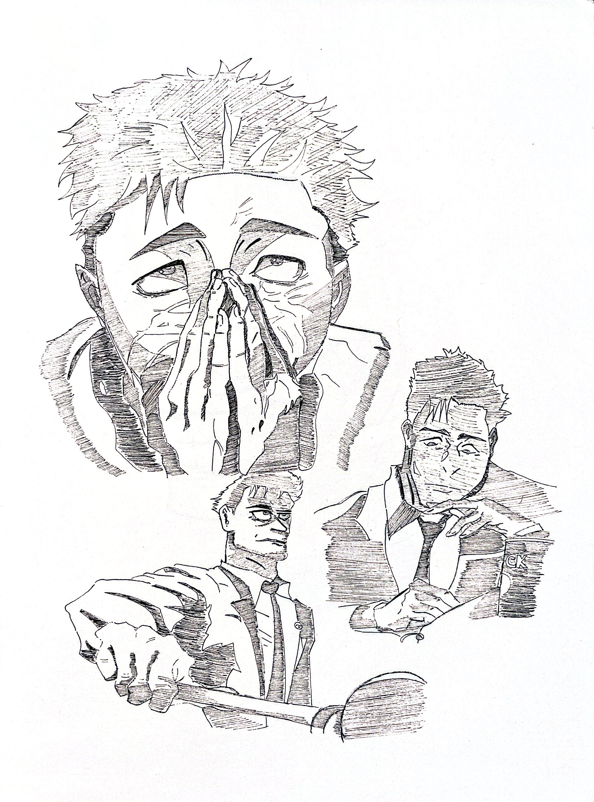
Hiromi Higuruma - Jujutsu Kaisen
Pen/Pencil, 2026
A collage of Hiromi Higuruma from the popular animated series - "Jujutsu Kaisen" by: Gege Akutami.
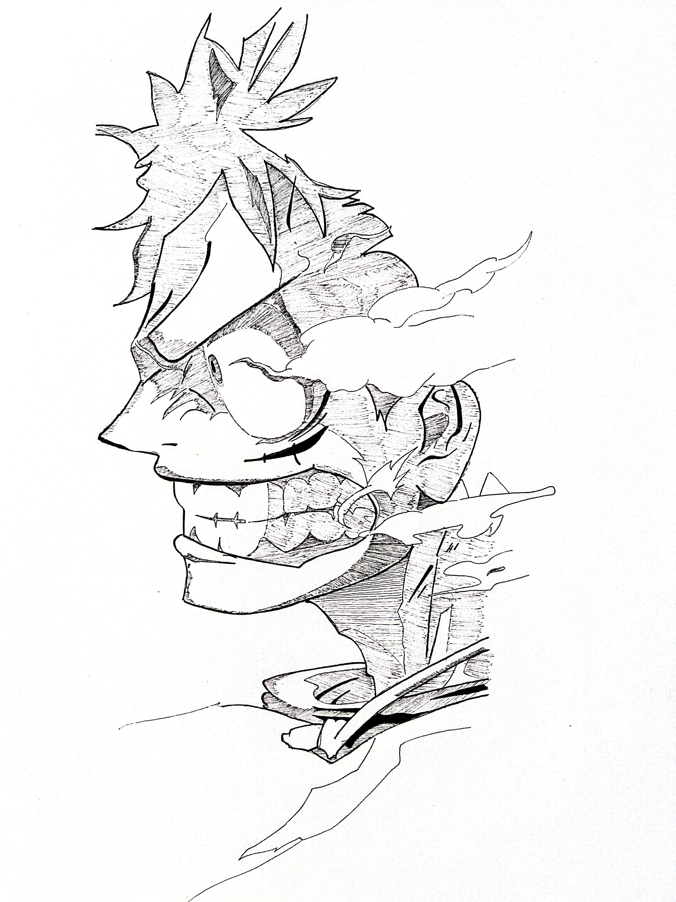
Monkey D. Luffy - One Piece
Pen/Pencil, 2026
A close-up drawing of "Luffy" from the renowed series - "One Piece" by: Eiichiro Oda
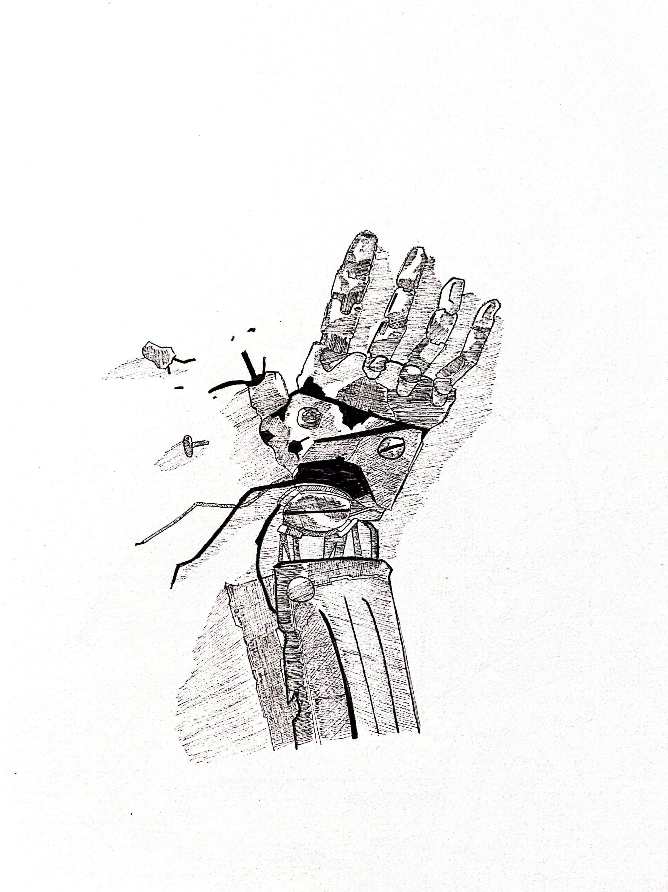
Broken Arm - Full Metal Alchemist
Pen/Pencil, 2026
A drawing of Eric's destroyed arm from the anime - "Full Metal Alchemist" by: Hiromu Arakawa
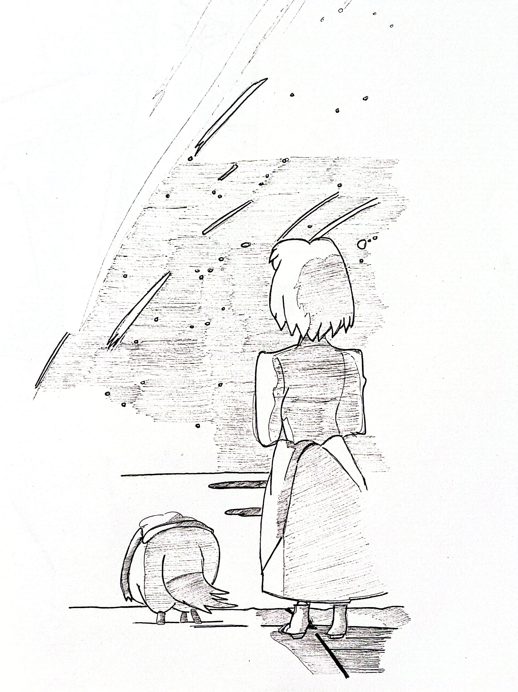
Woman on a shoreline
Pen/Pencil, 2026
A woman standing by a shoreline, with shooting stars overhead.
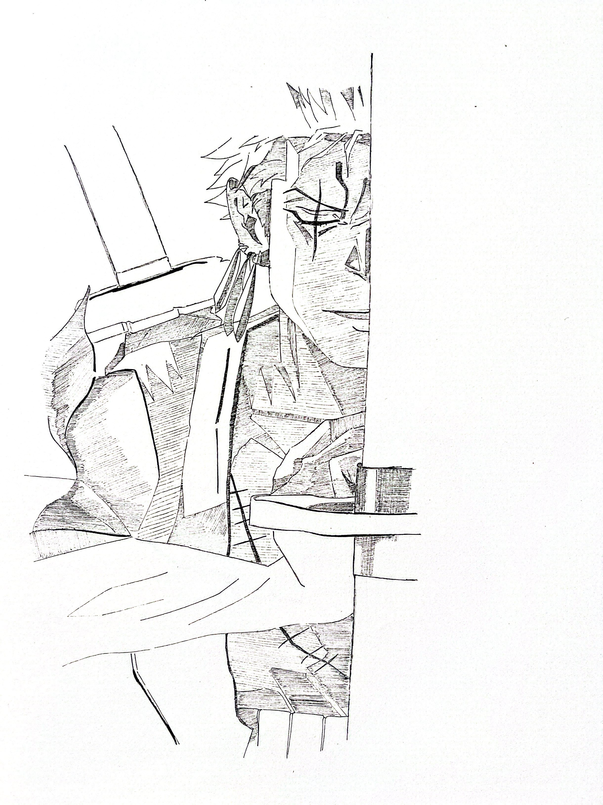
Roronoa Zoro - One Piece
Pen/Pencil, 2026
A drawing of half of Zoro from - "One Piece" by: Eiichiro Oda
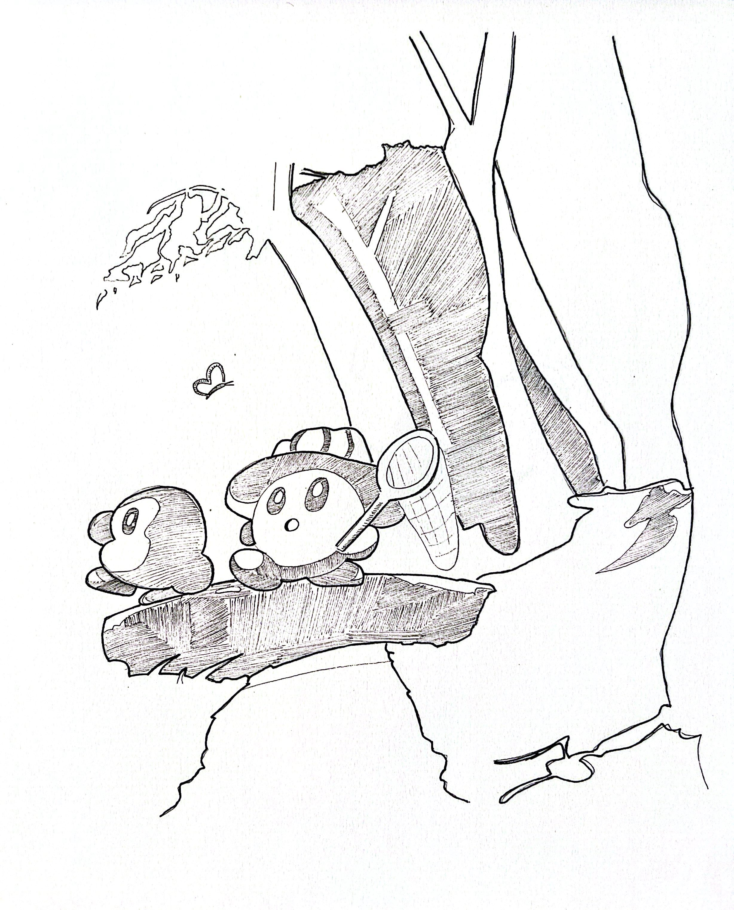
Kirby and Waddle Dee - Kirby
Pen/Pencil, 2026
A drawing of Kirby and Waddle Dee going on blissful stroll through the woods - "Kirby" by: Masahiro Sakurai
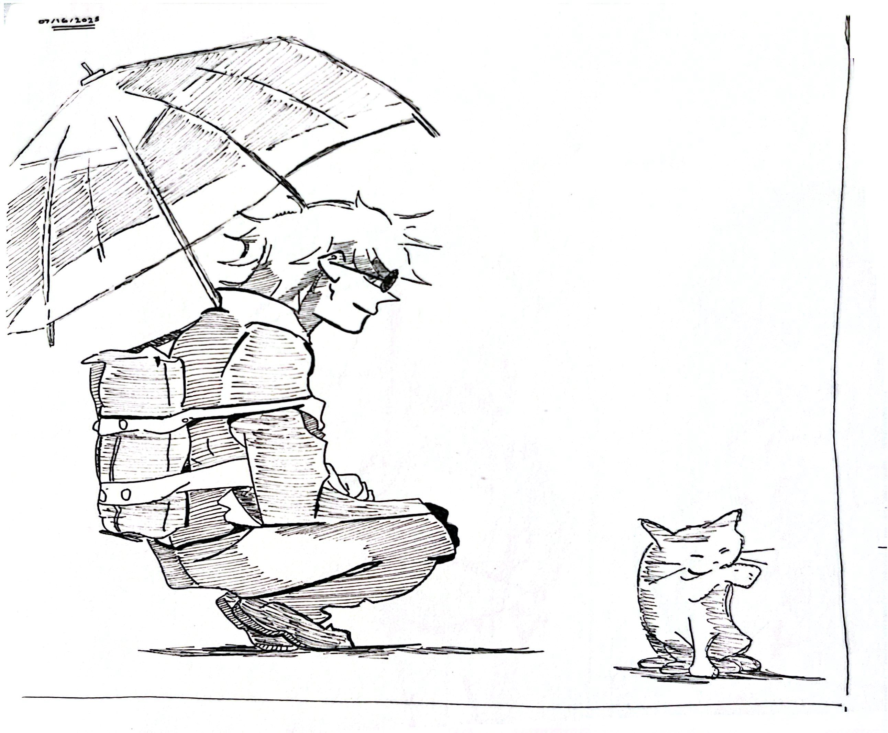
Gojo Satoru with a Cat - Jujutsu Kaisen
Pen/Pencil, 2026
A drawing of Gojo with a cat - "Jujutsu Kaisen" by: Gege Akutami.
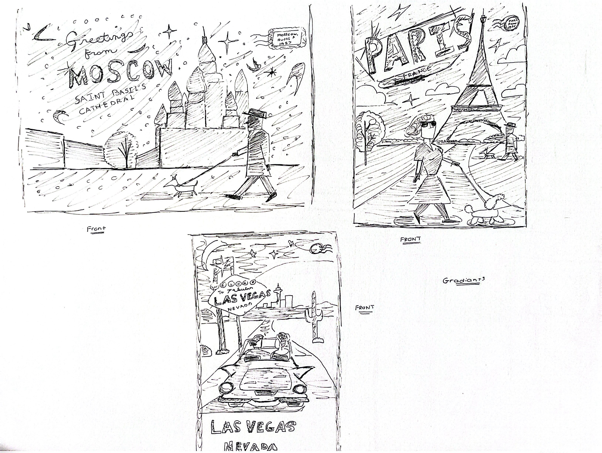
Post Card Ideas
Pen/Pencil, 2025
A collection of post card ideas that I made back in 2025.
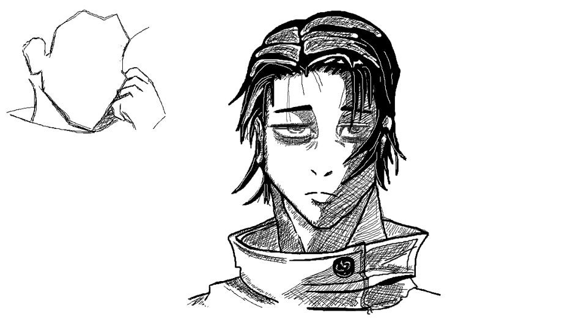
Yuta Okkotsu - Jujutsu Kaisen
MS Paint, 2026
A drawing of Yuta Okkotsu made in MS Paint - "Jujutsu Kaisen" by: Gege Akutami
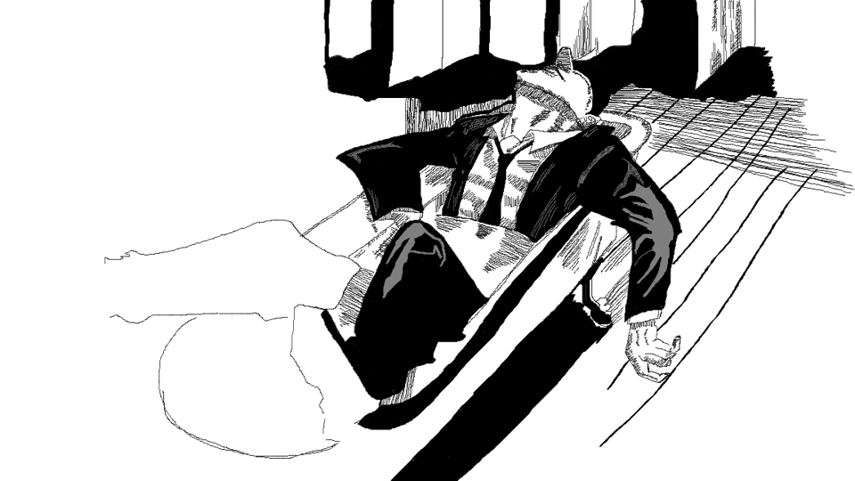
Hiromi Higuruma - Jujutsu Kaisen
MS Paint, 2026
A drawing of the nonotorious bathtub scene from - "Jujutsu Kaisen" by: Gege Akutami
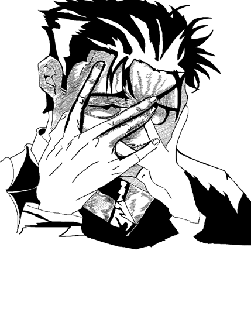
Hiromi Higuruma - Jujutsu Kaisen
MS Paint, 2026
A drawing of an exhausted Higuruma - "Jujutsu Kaisen" by: Gege Akutami
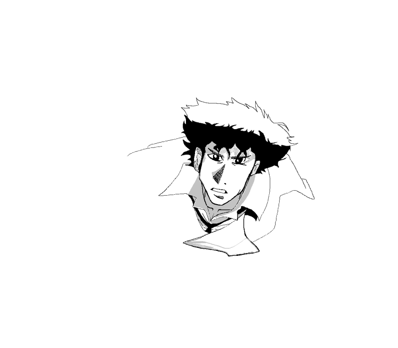
Spike Spiegel - Cowboy Bepop
MS Paint, 2026
A VARY unfinished drawing of Spike Spiegel - "Cowboy Bepop" by: Shinichirō Watanabe
ABOUT ME
Keith Anderson
Greetings! My name is Keith Anderson, and this is my digital portfolio, where I keep both past and present works.
I am interested in line work/cross-hatching, character-focused imagery, visual mood, and the quiet details that give an image personality. This site is built around a gallery-first layout so the artwork remains the central focus.
Mediums: Pen/Pencil, Digital, Paint
Focus: Illustration, character studies, composition
Current Goal: Building a clean archive of my work


Computer Science Projects
CS Assignments from 496
A GitLab repository containing my previous work from my Network Security class. Taken in 2025.
View Network Security repositoryCS Assignments from 491
A GitLab repository containing my previous work from my Intro to Computer Security class. Taken in 2026.
View Intro to Computer Security repository